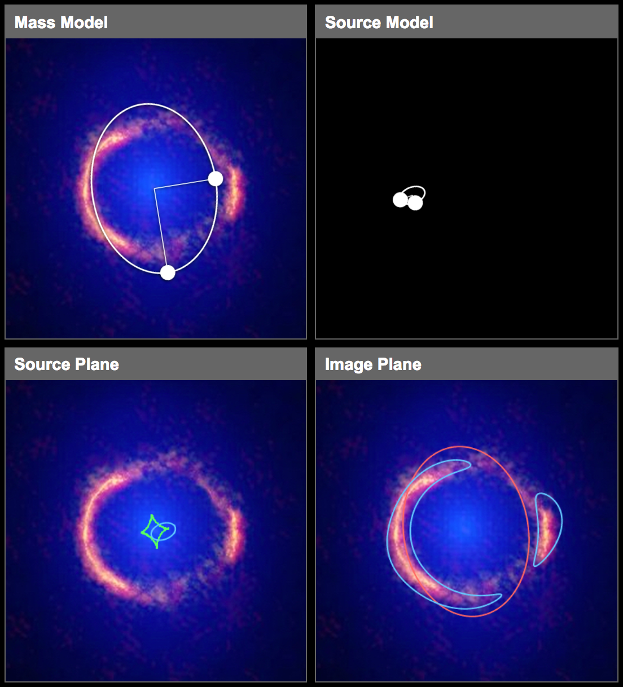

Hoopla is a simple javascript app for modeling images of strong gravitational lenses. It allows you to hand-craft a model lens out of elliptically-symmetric mass distributions (representing massive foreground galaxies) and elliptically symmetric light sources (representing faint background galaxies), and then dynamically predict the shape of the resulting gravitationally lensed image features as you tune the model. You can save your tuned model's parameters to a shareable JSON file by just clicking the button below the main window of Hoopla.

In principle, when studying the effects of gravitational lensing, we have specific names for the different objects under observation. We call the light-emitting object the source and the massive object the lens. What we see through our telescopes is called an the image plane. In this image plane, light from a distant galaxy (source) is being bent around a supermassive object (lens). The alignment of the source in relation to the lens produces this ring like images. In Hoopla, one can set up the source and lens by dragging your mouse in the blocks "Mass Model" and "Source Model" to draw ellipses, then move the cursor in the "Source Plane" block. You may see blue "circles" appearing in the "Image Plane" block. The goal of the game is: find the best models to make blue circles on top the lensed images in the "Images Plane" block. Once you are satisfied with the similarity between blue "circles" and the lensed images, you can use left click on the block "Source Plane" to activate freeze-model, then click the button "Submit your result" to submit your models.
Briefly states, here are the steps to play with the Hoopla:
You could obtain some lensed images now, but, probably if no matter how you move the mouse, the similarity between the blue circles and lensed images does not satisfy you, you may drag the handles (large white points) on the ellipses to change the ellipticity, size, and orientation of the source and lens, and drag the center of the ellipse to relocate the source and the lens, then move the mouse again in the "Source Plane" block to reproduce blue circles. Should you want to restart, please just refresh the webpage. Repeating the steps above, I believe you could obtain a reasonable model of gravitation lensing of this image. If you obtain such a model, please do not forget to freeze it (right click on the "Source Model" block) and submit it (click the button below the Hoopla windows).
The figure above shows one example of the model I created. One can see the lens model and source model in the upper blocks, the relative position of the source is shown in the lower left block, and the lensed images are presented in the lower right block. To me, the similarity between the blue circles and lensed images is acceptable. If you could produce images like this, then congratulations, you are a gravitational lensing modeler now. (^_^)